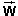

Prerequisites
Students should be somewhat familiar with Newton's universal law of gravitation and, those who want to use the applet in the electric mode, with the concept of charge and Coulomb's law of electrostatics. They should be familiar with Newton's second law of motion.
Learning Outcomes
Students will be introduced to the definitions of the gravitational and the electric field and will develop an understanding of the characteristics of the gravitational field of a uniform spherical mass distribution and of the electric field of a uniform spherical charge distribution, both outside and inside the distribution.
Instructions
Students should know how the applet functions, as described in Help and ShowMe.
The applet should be open. The step-by-step instructions in the following text are to be done in the applet. You may need to toggle back and forth between instructions and applet if your screen space is limited.
 Laws, Theorems, Definitions
Laws, Theorems, Definitions
 Newton's Second Law
Newton's Second Law
 Newton's Law of Universal Gravitation
Newton's Law of Universal Gravitation
 Coulomb's Law of Electrostatics
Coulomb's Law of Electrostatics
 Theorem on Forces Exerted by Spheres
Theorem on Forces Exerted by Spheres
 Definition of Gravitational Field
Definition of Gravitational Field
 Definition of Electric Field
Definition of Electric Field

The sum of all forces1,
,
(1)

Any two particles of masses m1 and m2 exert attractive gravitational forces on each other. The force exerted on Particle 1 has the same magnitude W as the force exerted on Particle 2, equal toF = Gm1m2 / d2
where d is the separation between the two particles and G is the universal gravitational constant whose value is
G = 6.673×10-11 m3 kg-1 s-2.
Any two particles carrying charges q1 and q2 exert electrostatic forces on each other. If the two charges have the same sign, the particles exert repulsive forces on each other. If they have opposite sign, the forces are attractive. The force exerted on Particle 1 has the same magnitude F as the force exerted on Particle 2, equal toF = k|q1||q2| / d2
where d is the separation between the two particles and k is a universal constant whose value is
k = 8.988×109 N m2 C-2.
Both Newton's law of gravitation and Coulomb's law of electrostatics describe forces that two point particles exert on each other. A spherical object is not a point particle and, therefore, neither of these laws directly gives the force exerted by a spherical object on a (point) particle. However, one can prove the following theorems which assume uniform mass or charge distributions throughout the spherical object.
The force has a different dependence on the distance d when the particle is outside the sphere, d > R, or when the particle is inside a small cavity inside the sphere, d < R.
Gravitational Force. The gravitational force exerted on a particle of mass m by a sphere of uniform mass density and total mass M and radius R has a magnitude W given by
d > R: W = GMm / d2 =
GMm/R2 (R/d)2.
W = GMm / d2 =
GMm/R2 (R/d)2. (6)
(6)
d < R: W = GMm/R2
(d/R) .
W = GMm/R2
(d/R) . (7)
(7)
Either one of these expressions has the same limit for d = R, i.e., when the particle is at the surface of the spherical object,
d = R: W = GMm / R2.
W = GMm / R2. (8)
(8)
Comment 1. When the particle is outside the sphere, d > R, the sphere acts like at point particle of mass M at the center of the sphere.
Comment 2. When the particle is inside the sphere, d < R, the sphere does not act like a point particle. W decreases as one approaches the center of the sphere in proportion to the distance d from the sphere.
To imagine the situation when the particle is inside the sphere, think of a small cavity inside the sphere. If the cavity is very small compared to the sphere, the change in the force W resulting from the removal of matter to create the cavity is negligible.
Comment 3. If the spherical object is the earth or some other large astronomical body, the quantity W is called the weight of the particle due to the earth or that body.
Comment 4. Let us denote the factor GM/R2 in Expressions (6) to (8) by gR,
gR =
GM/R2.  (9)
(9)
For more information on gR, see Comment 4 under "Gravitional Field" below.
In terms of the quantity gR, Expressions (6) to (8) can be written as
d > R: W = mgR
(R/d)2.
W = mgR
(R/d)2. (10)
(10)
d < R: W = mgR
(d/R) .
W = mgR
(d/R) . (11)
(11)
d = R: W = mgR.
W = mgR. (12)
(12)
Electrostatic Force. The electrostatic force exerted on a particle of charge q by a sphere of uniform charge density and total charge Q and radius R has a magnitude F given by
d > R: F = k|Q||q| / d2 =
k|Q||q|/R2
(R/d)2.
F = k|Q||q| / d2 =
k|Q||q|/R2
(R/d)2. (13)
(13)
d < R: F = k|Q||q|/R2
(d/R) .
F = k|Q||q|/R2
(d/R) . (14)
(14)
Either one of these expressions has the same limit for d = R, i.e., when the particle is at the surface of the spherical object,
d = R: F = k|Q||q| / R2.
F = k|Q||q| / R2. (15)
(15)
Comment 5. When the particle is outside the sphere, d > R, the sphere acts like at point particle of charge Q at the center of the sphere.
Comment 6. When the particle is inside the sphere, d < R, the sphere does not act like a point particle. F decreases as one approaches the center of the sphere in proportion to the distance d from the sphere.
If  is the gravitational force exerted on a test particle of mass m at some point in space, then the ratio
= / m
is called the gravitational field at the given point.
Comment 1. Since the force is proportional to the mass m, the gravitational
field is independent of m and
characterizes a "gravitational intensity" at the given point in space
that is present without the test particle and does not depend on any
properties of the test particle.
Comment 2. The SI-unit of the gravitational field is N/kg.
Comment 3. The gravitational field at a given point is a vector equal to the
acceleration due to gravity of a test particle at that point. The
reason is as follows.
If only the gravitational force
is acting on the test particle, then Newton's second law applied to
the particle gives the following equation for the acceleration of the particle:
= m  (17)
(17)
whence
= / m . (18)
(18)
Comparing the right-hand sides of Eqs.(16) and (18) shows that the
particle's acceleration, the acceleration due to gravity, is
equal to the gravitational field at the
location of the particle.
There is only one "acceleration due to gravity", equal to the one gravitational field. All particles have the same acceleration due to gravity. This was already noted by Galileo who stated that all particles fall equally fast if they are not impeded by air resistance.
Keep in mind, that the acceleration due to gravity is not a
constant but varies with location, just like . It is approximately constant in a small enough range
near the surface of the earth.
Comment 4. The acceleration due to gravity or the gravitational field at the surface of the sphere, gR, has a value close to 9.80 m/s2 if the sphere is the earth.
Comment 5. The gravitational field is defined at all
points in space. It is therefore not a single vector, but a
"vector-valued function defined on space". This simply means that to
describe the gravitational field one must specify the vectors at all points in space.
If
=
is called the electric field at the given point.
Comment 1. Since the force
is proportional to the charge q, the electric field is independent of q and characterizes
an "electric intensity" at the given point in space that is present
without the test particle and does not depend on any properties of
the test particle.
Comment 2. The SI-unit of the electric field is N/C.
Comment 3. The electric field is defined at all
points in space. It is therefore not a single vector, but a
"vector-valued function defined on space". This simply means that to
describe the electric field one must specify the vectors at all points in space.
Gravitational case
If the applet is not in the Gravitational mode, select that mode and RESET the applet.
Task 1. Under "Laws, Theorems, Definitions" above, read
Exercise 1
Derive an expression for the magnitude g of the gravitational field due to a sphere of uniform mass density and total mass M at a distance d from the center of the sphere, if the field point is outside the sphere.
What is the direction of the field vector at this point?
Answer. Taking magnitudes on both sides of Definition (16) and substituting Expression (6) or (10) for W gives the following three expressions for g:
d > R: g = GM / d2 =
GM/R2 (R/d)2 =
gR (R/d)2.
g = GM / d2 =
GM/R2 (R/d)2 =
gR (R/d)2. (20)
(20)
The direction of the field vector
is towards the center of the sphere.
Exercise 2
In the applet's default setting, the values for the radius and the mass of the source object are the same as those for the earth:
 R =
6.38×106 m,
R =
6.38×106 m,
 M =
5.98×1024 kg.
M =
5.98×1024 kg.
Check that the sliders and the Data box display these values.
Observe the magnitude g of the gravitational field shown in the Data box and the length and direction of the green arrow representing the field vector when the field point is as close to the surface of the source object as you can make it.
What value would you expect for g? Calculate this value using the first one in the series of Expressions (20).
Exercise 3
Drag the field point to a point where d = 2R, as closely as you can, and observe the value of g at this point and the length and direction of the field vector.
At d = 2R = 1.28×107 m, you should find g = 2.45 m/s2.
When comparing this value to the value of g at d = R, is the dependence of g on d consistent with a 1/d law or a 1/d2 law? Check your answer by increasing the Field Scale setting by the appropriate factor (what factor should it be?) so that the green arrow at this new scale setting has the same length that it had at d = R.
Exercise 4
Repeat Exercise 3 for d = 3R. You may have to move the source object to be able to achieve d = 3R.
Question 1
Take the mass of the sun to be 1.99×1030 kg, and calculate the magnitude of the average acceleration due to gravity experienced by the earth as it orbits the sun. Take the average radius of the earth's orbit to be 1.50×1011 m.
Check your answer with the applet. You will have to give the sun an unrealistically large radius in order to have a visible source object on the screen while adjusting the distance d. As long as the radius of the sun is smaller than the earth's orbital radius, it will have no effect on the answer. Why not?
Compare your result with that of the magnitude of the acceleration due to gravity due to the earth on the surface of the earth.
Electric case
If the applet is not in the Electric mode, select that mode and RESET the applet.
Task 2. Under "Laws, Theorems, Definitions" above, read
Exercise 5
Derive an expression for the magnitude E of the electric field due to a sphere of uniform charge density and total charge Q at a distance d from the center of the sphere, if the field point is outside the sphere.
What is the direction of the field vector at this point? Vary the sign of the source charge.
Answer. Taking magnitudes on both sides of Definition (19) and substituting Expressions (13) for F gives the following two expressions for E:
d > R: E = k|Q| / d2 =
k|Q|/R2 (R/d)2.
E = k|Q| / d2 =
k|Q|/R2 (R/d)2. (21)
(21)
The direction of the field vector
is towards the center of the sphere if Q is negative and away
from the center of the sphere if Q is positive.
Exercise 6
In the default setting, the values for the radius and the charge of the source object are those appropriate for the electron:
 R =
2.82×10-15 m,
R =
2.82×10-15 m,
 Q =
-1.60×10-19 C.
Q =
-1.60×10-19 C.
Reset these values to
 R =
1.00×10-15 m,
R =
1.00×10-15 m,
 Q =
1.60×10-19 C
Q =
1.60×10-19 C
which apply approximately to the proton. The proton's "radius" is measured to be slightly smaller than 1.0×10-15 m. Note that such radius measurements are made by bombarding the proton with either electrons or protons and that what one may want to define as a "radius" is a quantity that depends on the nature of the interaction of such probes with the proton. Also note that an electron "radius" has not been observed in similar experiments and that the "electron radius" to which the applet is set is the so-called "classical electron radius" which is a theoretical quantity that merely has this name and does not describe a real electron radius.
Record the magnitude E of the electric field displayed in the Data box and the length and direction of the green arrow representing the field vector when the field point is as close to the surface of the source object as you can make it.
Calculate this value using Expression (21). Compare the value to that for an electric field that you might encounter in a laboratory, e.g., the magnitude of the field between the plates of a parallel-plate capacitor whose plates are 1 mm apart and which has a voltage of 10 V across the plates. (For a parallel-plate capacitor, E = V/d, where V is the voltage across the plates in volt and d the separation in meter. The answer will be in V/m which is the same as N/C.)
Exercise 7
Repeat Exercises 3 and 4 for the electric case.
Question 2. What is the magnitude of the electric field due to a hydrogen atom's nucleus (proton) sensed by the electron in the atom's lowest orbit, which is a circle of radius 5.3×10-11 m?
Again, compare the magnitude of this field to that of a typical laboratory field.
Gravitational case
If the applet is not in the Gravitational mode, select that mode and RESET the applet.
Exercise 1
Derive an expression for the magnitude g of the gravitational field due to a sphere of uniform mass density and total mass M at a distance d from the center of the sphere, if the field point is inside the sphere.
What is the direction of the field vector at this point?
Answer. Taking magnitudes on both sides of Definition (16) and substituting Expression (7) or (11) for W gives the following two expressions for g:
d < R: g = GM / R2
(d/R) = gR (d/R).
g = GM / R2
(d/R) = gR (d/R). (22)
(22)
The direction of the field vector
is towards the center of the sphere.
Exercise 2
Drag the field point to as close to the surface of the source object as you can.
Record the magnitude g of the electric field shown in the Data box, and observe the length and direction of the green arrow representing the field vector.
g should be equal to 9.80 m/s2 since the mass and radius of the source object in the present default mode apply to the earth.
You should find E to be equal to 9.80/4 m/s2 and 9.80/9 m/s2, respectively.
Verify that this is the case by increasing the Field Scale setting by factors of 4 and 9, respectively. This should result in green arrows whose lenghts are equal in pixel to the length of the arrow at d = R when using the original Field Scale setting.
The direction of the field vector should always be towards the center of the source object.
Question 1. What value do you expect for g at the center of the source object?
Can you explain why g should be zero at d = 0 in terms of the superposition of the contributions to the gravitational field at the center of the source from all mass elements distributed throughout the source?
Electric case
If the applet is not in the Electric mode, select that mode and RESET the applet.
Exercise 3
Derive an expression for the magnitude E of the electric field due to a sphere of uniform charge density and total charge Q at a distance d from the center of the sphere, if the field point is inside the sphere.
What is the direction of the field vector at this point?
Answer. Taking magnitudes on both sides of Definition (19) and substituting Expression (14) for F gives the following expression for E:
d < R: E = k|Q| / R2
(d/R).
E = k|Q| / R2
(d/R). (23)
(23)
The direction of the field vector
is towards the center of the sphere if the source charge is
negative, away from the center of the sphere if the source charge is
positive.
Exercise 4
Again, set the radius and charge of the source object to
 R =
1.00×10-15 m,
R =
1.00×10-15 m,
 Q =
1.60×10-19 C,
Q =
1.60×10-19 C,
and drag the field point to as close to the surface of the source object as you can.
Record the magnitude E of the electric field shown in the Data box, and observe the length and direction of the green field vector.
E should be equal to the value calculated in Exercise 6 under "Field Outside the Source" above, namely, E = 1.44×1021 N/C.
You should find the value of E to be equal to 1/4 and 1/9, respectively, times that at d = R. The direction of the field vector should always be away from the center of the source object if the source charge is positive.
Verify that this is the case by increasing the Field Scale setting by factors of 4 and 9, respectively. This should result in green arrows whose lenghts are equal in pixel to the length of the arrow at d = R when using the original Field Scale setting.
Exercise 5
Reverse the sign of the source charge from positive to negative, but make no other changes. What happens to the electric field vector?
Compare the directions of the field vector in the gravitational case for positive mass and in the electric case for positive charge. Are they the same?